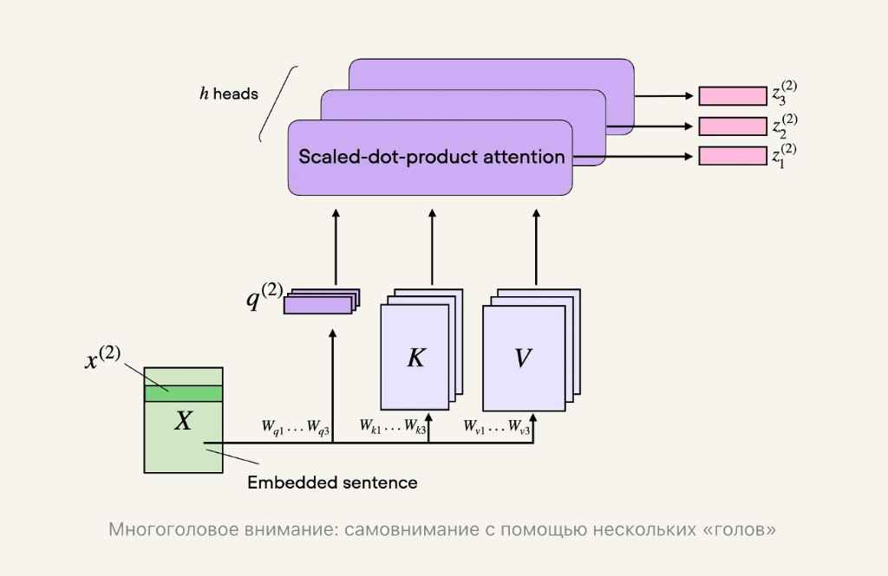

Лекция 2. Эволюция трансформеров к современным LLM-архитектурам06
Многоголовое внимание

При масштабированном внимании на основе скалярного произведения входная последовательность преобразуется с помощью трёх матриц, представляющих запрос, ключ и значение. Эти три матрицы можно рассматривать как одну голову внимания в контексте многоголового внимания.
Механизм многоголового внимания включает в себя несколько таких «голов», каждая из которых состоит из матриц запроса, ключа и значения. Эта концепция аналогична использованию нескольких ядер в свёрточных нейронных сетях, которые создают карты признаков с несколькими выходными каналами.